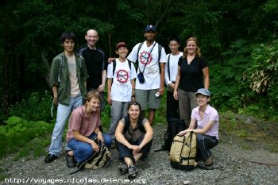
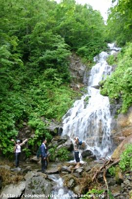
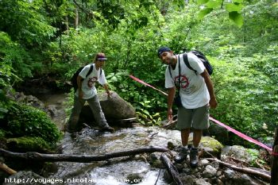
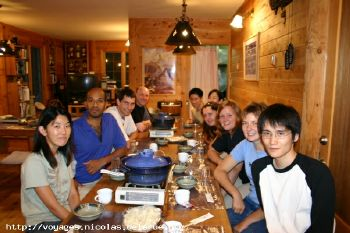
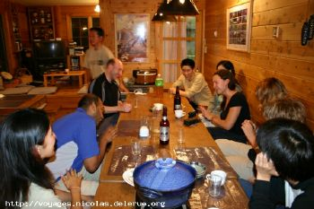
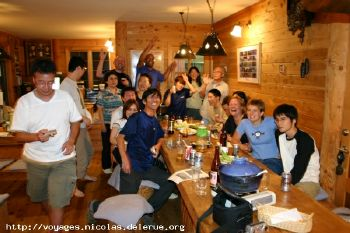
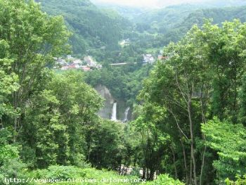
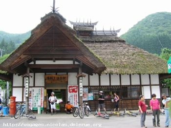
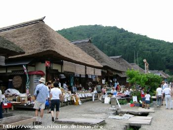
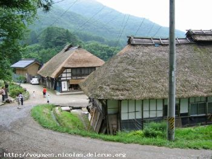

Minami Aizu
Hiking-Cycling,
July 17-18, 2004
(organised by Ryoko and Ajay)
Photos by Nicolas and
report by
Ryoko and Ajay
|
|
 |
 |
|
 |
|
 |
 |
 |
| Dinner |
getting
merrier |
and merrier... |
|
|
 |
|
|
|
 |
 |
 |
| a
thatched roof station |
At
Ouchijukku |
|
Report by
Ryoko and Ajay:
First of all, we would like to thank all the
participants who joined us and
made this event a success especially Noda-san for
helping us in organizing
the cycling, Kurikin-san, Zmutt guesthouse people
for their support and
Nicolas, Mark for driving.
On Saturday, 17th of July, morning most of us
except two reach the meeting
point (7/11 near Doho park) in time, and then we
waited for the absentees
for about 30 min. At 4:50 am we started from
Tsukuba.
We reached mountain roads in Minami-Aizu around
10:00 and at 11:30 am started
the hiking. After a while it started raining, but
it was fun to climb
Nanatsugatake through the streams. The rain was
getting stronger and trails
were becoming slippery, which make us difficult to
reach the summit and we
plan to climb down. After check-in to the
guesthouse we visited an onsen.
After the showery hike and onsen we back to the
guesthouse, where we met
Noda-san and others who join us in the cycling
event. It was really nice
time and dinner was also delicious.
In the cycling trip Noda-san lead us. All of us
enjoyed cycling around
Minami Aizu, we stopped in the places where we find
nice sceneries. Reached
Ouchijukku and had lunch, after the cycle tour we
visited an onsen, and back
to Tsukuba (reached around 11:30 hrs)
Back to the
Home Page